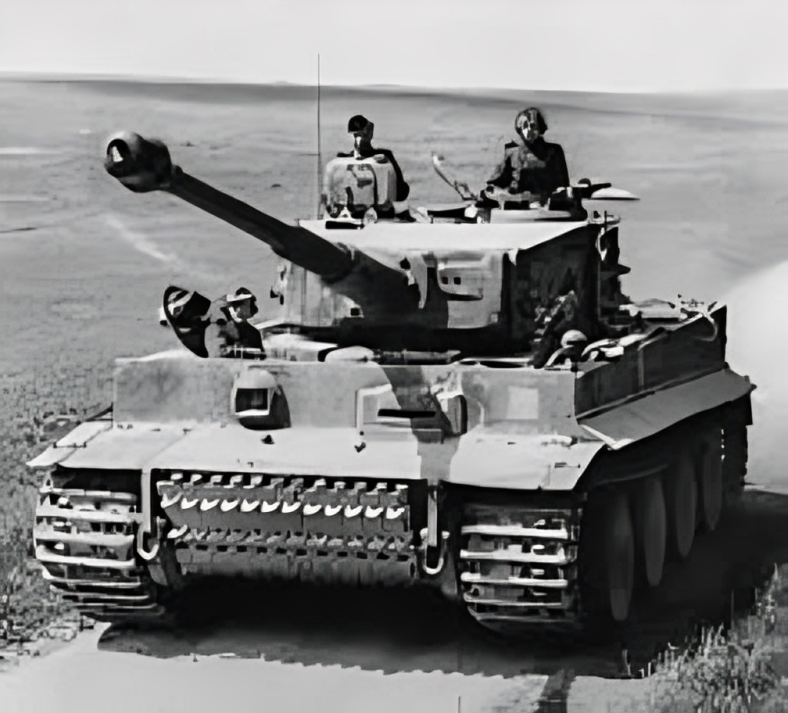

The Tiger I was a German heavy tank introduced in 1942, designed to provide superior firepower and armor compared to all Allied tanks of the time. Developed by Henschel & Son, it became a symbol of German armored might on both the Eastern and Western fronts. The Tiger I had a profound psychological impact on Allied forces, as even a few could dominate a battlefield. However, it was expensive and time-consuming to produce, with only 1,347 built. Despite these limitations, the Tiger I influenced postwar heavy tank designs and remains one of the most famous tanks in military history.

- Characteristics:
- Type: Heavy tank
- Weight: 57 tons
- Crew: 5
- Gun: 88mm
- Speed: 45 km/h